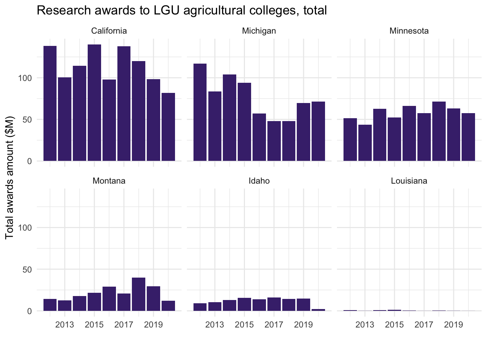
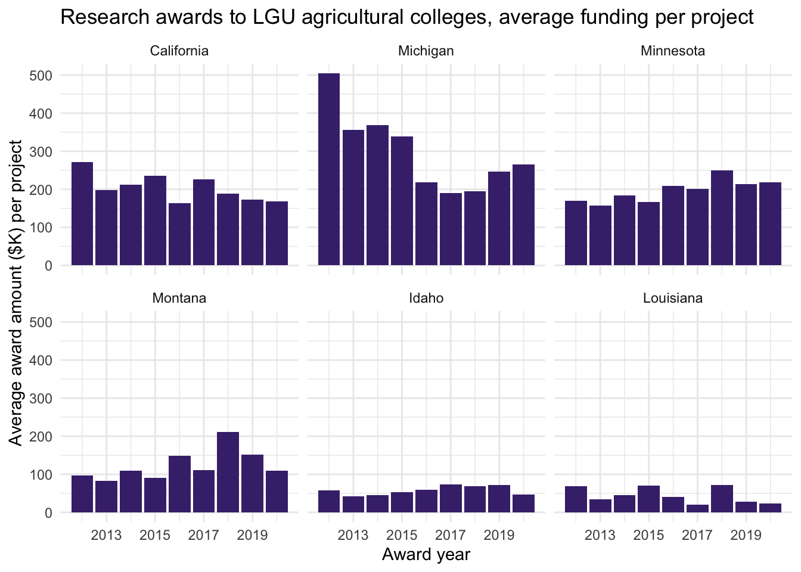

2 Who funds what?
| A summary of research funding for LGU Agricultural Colleges, 2012-2020 |
| Authors: Liza Wood, Victoria Fletcher, Adam Vera |
| Date: 2023-09-27 |
2.1 Introduction
The research carried out by universities is largely a product of grant funding. What breeders propose, and whether they are able to carry out that research, depends on the resources to do so. This report analyzes the grant funding to Principle Investigators (PIs) at Land Grant Universities (LGUs), particularly those that engage in plant breeding research. This analysis explores how much money is coming in to LGUs and from whom.
We base this report on data collected via public records requests. The records requested include all grant funding to LGU’s agricultural colleges between 2000-2020, though some universities were only able to report the last 10 years, starting from 2012. These data were requested for the 25 LGUs in our licensing data (Section 3), however, we have not received responses from all of them. Furthermore, for the responses we do have, the data are not all clean. Thus this analysis presents a pilot for 6 states: California, Idaho, Louisiana, Michigan, Minnesota, Montana.
Key take-aways are as follows:
- Agricultural colleges at LGUs in California, Michigan, and Minnesota are among the most highly funded, both in absolute and per-project terms
- Funding to agricultural colleges and breeding programs comes largely from federal money, though agricultural commodity groups are also prominent funders
- Breeding projects account for only about 1-5% of funded projects in LGU agricultural colleges; details on funders are provided in tables below
2.2 How much grant money goes to LGU agricultural colleges?
First we summarize the overall funding to the agricultural colleges in each LGU between 2012-2020. California, Michigan, and Minnesota receive the highest award values for agricultural research, totaling over $1 billion, $692 million, and $545 million over the 9 years, respectively. On the lower side of the spectrum, Montana, Idaho, and Louisiana receive only $198 million, $110 million, and $4 million over the same time period.

Some of these differences are a feature of size. Of the PIs granted awards over this time period, there are 616 from California, 462 from Michigan, 390 from Minnesota, 206 from Montana, 207 from Idaho, and only 38 from Louisiana. Likewise, the number of funded projects is 5063 from California, 2343 from Michigan, 2683 from Minnesota, 1582 from Montana, 1899 from Idaho, and only 74 from Louisiana.
We account for size by calculating the average award amount per project (figure below), but the general impression is about the same. Michigan averages $295K per project, California $203K, and Minnesota $196K. Montana averages $125K per project, Idaho $57K and Louisiana $50K.

2.3 Who is funding LGU agricultural colleges?
As for who is funding agricultural research, this question is still under investigation. While all universities list the sponsoring organization, only California aggregated these sponsors into higher-level groupings (e.g. federal government, business, charity). Our research group will be making sponsor names uniform and binning them throughout the research process, and below we provide a summary of the aggregate contributions to research at UC Davis.
| Sponsor type | Awards total ($M) | Percent of total funding (%) |
|---|---|---|
| Federal | 1035.8 | 45 |
| State | 482.3 | 21 |
| Agricultural marketing organization | 133.6 | 6 |
| Other university/research institute | 129.3 | 6 |
| Business | 111.8 | 5 |
| Charity | 101.5 | 4 |
| Interest group | 82.5 | 4 |
| UC internal & Office of the President | 80.6 | 4 |
| Foundation | 69.5 | 3 |
| Other government | 50.8 | 2 |
| Other university/research institute | 12.6 | 1 |
| Unassigned | 0.6 | 0 |
2.4 How much grant money goes to plant breeding?
Beyond funding for agricultural colleges, we are particularly interested in the funding that goes to plant breeding. With the data we’ve been given, it is challenging to isolate plant breeding funding without a complete list of all plant breeders from each university. To overcome this challenge we can take two approaches: 1) using key words in research project titles and 2) using names of breeders from plant variety & licensing data.
2.4.1 Identify plant breeding through project name
First, we use funded project titles based on detection of relevant plant breeding words to identify some of the projects related to plant breeding. We look for titles that include words like “breed”, “seed”, “germplasm”, and “variety”, but not terms related to animal breeding, seed treatments, or seeding rates. This approach will likely miss several projects that do not have plant-breeding specific titles, however, it provides a cursory look at plant breeding projects.
This approach identifies 268 projects across the six universities in our pilot. Some titles include:
- Spring wheat breeding and genetics
- Fusarium yellows in celery: breeding and maintaining resistance, and integrated control.
- Increasing the rate of genetic gain for yield in soybean breeding programs
Based on this approach, we calculate that breeding projects account for 1% of all agricultural college projects and 1% of all agricultural college funding dollars. Of these projects, the dominant sponsors for each state are listed below, along with their total award value (in thousand USD) between 2012-2020. Currently, sponsor names have not been made uniform so we see sources like NIFA listed under slightly different names for each state. Here we see again that federal funders and USDA are among the largest contributors, but agricultural commodity groups and interest groups are also prominent.
2.4.2 Identify plant breeders through PI name
A second approach is to start with our data on plant varieties and licenses (Section 3) and pull out the plant breeders linked to those licenses. So far this is an imperfect process, as not all varieties are linked explicitly to a breeder (this is an ongoing data collection process). Preliminarily, for the six universities in our pilot analysis, we identify 165 plant breeders, with the following counts per university:
| State | Count of inventors |
|---|---|
| California | 32 |
| Idaho | 10 |
| Louisiana | 33 |
| Michigan | 29 |
| Minnesota | 49 |
| Montana | 12 |
We can search for those names in the list of PIs in our awards data to see how many of those 165 plant breeders we have funding data for. Using this method we identify funding for 54 of the 165 on our inventor list. This may be due to a mismatch in time scales for which we requested funding data, as we’d except that all LGU breeders have received some funding for the their research. Of the breeders we did identify in the funding data, those breeders are associated with 1290 projects. Some titles from this approach include:
- Cultivar Development Commercialization of Spring and Winter Triticale for Forage and Feed
- Development of Multipurpose Potato Cultivars with Enhanced Quality, Disease and Pest Resistance ¿ North Central Region 201921
- Sugarbeet Production Research to Improve the Yield and Quality of Sugarbeets
Based on this approach, we calculate that breeding projects account for 5% of all agricultural college projects and 5% of all agricultural college funding dollars. Of these projects, the dominant sponsors for each state are listed below, along with their total award value (in thousand USD) between 2012-2020.